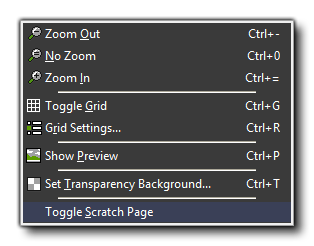
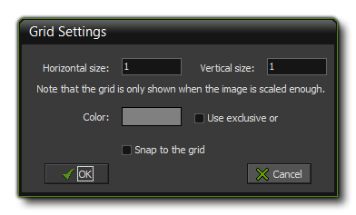
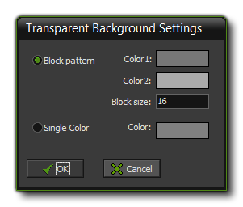

The Sprite Editor View Menu
This section explains the view menu functions associated with the GameMaker: Studio sprite editor.

The view menu contains a number of commands related to the visual aspect of the image editor:
- Zoom Out: Zoom the main image view out to see more of the sprite.
- No Zoom: Set the zoom level for the editor to have a 1:1 pixel ratio for the sprites on the screen.
- Zoom in: Zoom the main image view in to see less of the sprite and focus on smaller details.
- Toggle Grid: With this you can toggle a transparent grid of lines that show the individual pixels of your image (note this is different to the background grey/white squares that show transparency).
- Grid Settings: Here you can specify the size of the pixel grid that you want to use, the base overlay colour for the grid lines as well as how to blend them ("exclusive or" on or off), and you can also enabled grid snapping, which
will snap what you draw to the nearest grid square when active.

- Show Preview: This will toggle the preview window for your sprite on or off. The Preview window appears in the main editor window, and if you double click on it, you can switch between x1, x2 and
x3 scaling, giving you a much clearer picture of the sprite and how it looks while editing it in the main window.
- Set Transparency Background: This option will open the Transparency Settings window where you can change the grid of squares shown when any part of your sprite is transparent. The menu permits
you to change the block colours, as well as their size, or select a flat colour:

- Toggle Scratch Page: This will toggle the current drawing canvas to be either the current image index, or the
scratch page.
© Copyright YoYo Games Ltd. 2018 All Rights Reserved